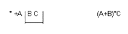
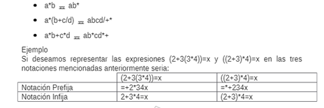
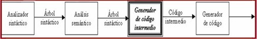

Las notaciones sirven de base para expresar sentencias bien definidas.
El uso más extendido de las notaciones sirve para expresar operaciones aritméticas.
Las expresiones aritméticas se pueden expresar de tres formas distintas: infija, prefija y postfija.
Los prefijos, Pre - Pos - In se refieren a la posición relativa del operador con respecto a los dos operandos.
La diversidad de notaciones corresponde en que para algunos casos es más sencillo un tipo de notación.
Las notaciones también dependen de cómo se recorrerá el árbol sintáctico, el cual puede ser en inorden, preorden o postorden; teniendo una relación de uno a uno con la notación de los operadores.
2.1.1 Prefija
La expresión o notación prefija nos indica que el operador va antes de los
Operandos sus características principales son:
• Los operadores conservan el mismo orden que la notación infija
equivalente.
• No requiere de paréntesis para indicar el orden de precedencia de
operadores ya que él es una operación.
• Se evalúa de izquierda a derecha hasta que encuentra el primer operador
seguido inmediatamente de un par de operando.
• Se evalúa la expresión binaria y el resultado se cambia como un nuevo
operando. Se repite hasta que nos quede un solo resultado.
• El orden es operador, primer operando, segundo operando.

La notación prefija pone el operador primero que los dos operandos, por lo que la expresión anterior queda: +ab-5. Esto se representa con una estructura del tipo FIFO (First In First Out) o cola.
Las estructuras FIFO son ampliamente utilizadas pero tienen problemas con el anidamiento aritmético.
2.1.2 Infija
La notación infija es la más utilizada por los humanos porque es la más comprensible ya que ponen el operador entre los dos operandos. Por ejemplo a+b-5.
No existe una estructura simple para representar este tipo de notación en la computadora por esta razón se utilizan otras notaciones.
La expresión o notación infija es la forma más común que utilizamos para escribir expresiones matemáticas, estas notaciones se refiere a que el operador esta entre los operadores. La notación infija puede estar completamente parentizada o puede basarse en un esquema de precedencia de operadores así como el uso de paréntesis para invalidar los arreglos al expresar el orden de evaluación de una expresión:
3*4 = 12
3*4+ = 14
3*(4+2) = 18
La notación infija tiene el problema de que en expresiones con más de un operador existe ambigüedad sobre cuál es el orden de evaluación.
Por ejemplo
la expresión 8/4/2 se puede interpretar como (8/4)/2 o bien 8/(4/2). Las otras notaciones no sufren este problema.
La notación habitual. El orden es primer operando, operador, segundo operando.
2.1.3 Postfija
Como su nombre lo indica se refiere a que el operador ocupa la posición
después de los operandos sus características principales son:
• El orden de los operandos se conserva igual que la expresión infija
equivalente no utiliza paréntesis ya que no es una operación ambigua.
• La operación posfija no es exactamente lo inverso a la operación prefija
equivalente.
• El orden es primer operando, segundo operando, operando.
(A+B)*C AB+C*
La notación postfija pone el operador al final de los dos operandos, por lo que la expresión queda: ab+5-
La notación posftfija utiliza una estructura del tipo LIFO (Last In First Out) pila, la cual es la más utilizada para la implementación.
Ejemplo:
 
Bibliografia:
Lenguajes y Automatas 2. (2020). 2.2.2 Código P . 2021, de Blogspot Sitio web: https://equiponegro8.blogspot.com/2020/03/2_56.html
S/N. (S/N). UNIDAD II. 14/04/2021, de ITPN Sitio web: http://itpn.mx/recursosisc/7semestre/leguajesyautomatas2/Unidad%20II.pdf